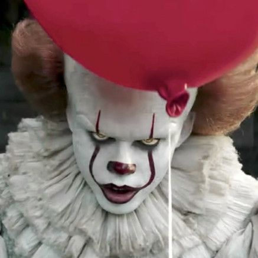

Spooky Halloween Traditions and Their Origins
CARVING HALLOWEEN JACK-O'-LANTERNS
Jack-O'-Lanterns, which originated in Ireland using turnips instead of pumpkins, are supposedly based on a legend about a man name Stingy Jack who repeatedly trapped the Devil and only let him go on the condition that Jack would never go to Hell. When he died, however, Jack learned that Heaven didn’t really want his soul either, so he was condemned to wander the Earth as a ghost for all eternity. The Devil gave Jack a lump of burning coal in a carved-out turnip to light his way. Eventually, locals began carving frightening faces into their own gourds to scare off evil spirits.
SEEING GHOSTS
Celtic people believed that during the festival Samhain, which marked the transition to the new year at the end of the harvest and beginning of the winter, spirits walked the Earth. Later, the introduction of All Souls Day on November 2 by Christian missionaries perpetuated the idea of a mingling between the living and the dead around the same time of year.
WEARING SCARY COSTUMES
With all these ghosts wandering around the Earth during Samhain, the Celts had to get creative to avoid being terrorized by evil spirits. To fake out the ghosts, people would don disguises so they would be mistaken for spirits themselves and left alone.
GOING TRICK-OR-TREATING, THE PAGAN WAY
There is a lot of debate around the origins of trick-or-treating. One theory proposes that during Samhain, Celtic people would leave out food to placate the souls and ghosts and spirits traveling the Earth that night. Eventually, people began dressing up as these otherworldly beings in exchange for similar offerings of food and drink.